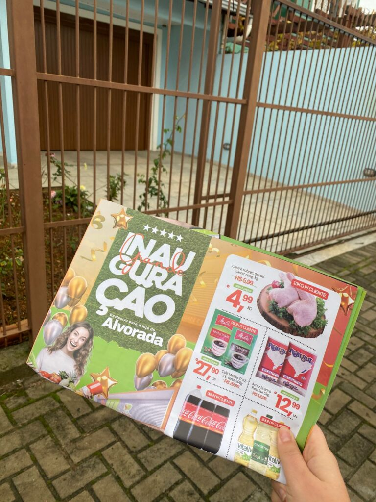

A cidade de Alvorada está prestes a receber uma novidade que promete movimentar a economia local e transformar a experiência de compra.
O Super Santa Maria anuncia a inauguração de uma nova unidade na Avenida Presidente Getúlio Vargas, um dos principais corredores comerciais da cidade.
Mais do que uma nova loja, essa expansão representa investimento no varejo local, geração de oportunidades e fortalecimento da comunidade.
1. Uma rede que cresce com propósito
O Super Santa Maria nasceu com o objetivo de oferecer praticidade, economia e acolhimento às famílias gaúchas — e ao longo dos anos se consolidou como referência nos bairros onde atua.
Suas lojas se destacam pela organização, variedade de produtos e, principalmente, pelo cuidado com a experiência do cliente.
Presença regional
Com unidades em cidades como Viamão e Porto Alegre, a rede investe em ambientes amplos, atendimento humanizado e ações promocionais que fazem diferença no dia a dia da população.
Agora, com a chegada em Alvorada, dá mais um passo estratégico em sua expansão.
Crescer com propósito é investir nas pessoas e nas comunidades.
2. MOBI nas ruas: presença que gera movimento
Para potencializar essa inauguração, a MOBI Comunicação está atuando com uma operação de divulgação estratégica nas ruas da cidade.
Equipes de panfletagem trabalham nos bairros do entorno, levando uma comunicação direta, humanizada e eficiente até o público local.
A presença nas ruas não é apenas distribuição — é conexão real com o cliente.
A integração entre ações offline e digital amplia o alcance da campanha e garante visibilidade com mais impacto.

3. Mais que uma loja: um polo de oportunidades
A nova unidade representa muito mais do que conveniência para os consumidores.
- Geração de empregos diretos e indiretos
- Fortalecimento da economia local
- Novas oportunidades para a comunidade
- Desenvolvimento do comércio regional
Ao expandir para Alvorada, o Super Santa Maria reforça o papel social do varejo: gerar renda, fortalecer vínculos e contribuir com o crescimento da cidade.
A chegada da nova unidade mostra como uma marca pode crescer com responsabilidade, criando conexões duradouras e impacto real.
Vai inaugurar ou expandir seu negócio?
Leve sua marca para as ruas com estratégia e gere movimento real desde o primeiro dia.
Falar no WhatsApp